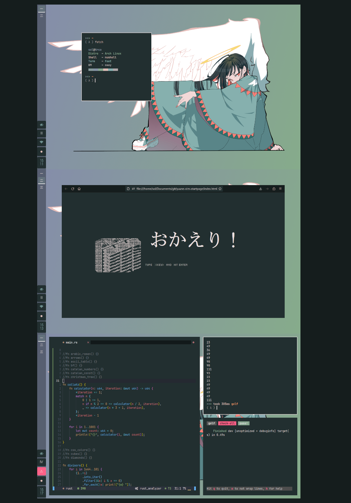

I used pywal to generate this colorscheme, feel free to do the same.
Black: #222F30 Grey: #A59D9C Red: #86999B Green: #86A78F Yellow: #8592A5 Blue: #87B0AF Magenta: #B0A7A9 Cyan: #DCBCB6 White: #EDE1E0
Provided is a rust crate called fetch with a basic template to make a hard-coded fetch program.
(That's the one I used for the screenshots.)
The program displays the following:
UserName@HostName Distro ~ DistroName Shell ~ ShellName Term ~ Terminal WM ~ WindowManager ▅▅▅▅▅▅▅▅▅▅▅▅▅▅▅▅▅▅
So simply modify the variables in the source file to fit your setup and cargo build --release to get the binary.
(Tip: I copied the binary over to ./local/bin/.)
eject by Spogelsesmaskinen.
ᐅ eject
ᐅ Spogelsesmankinen Twitter profile
Could not find the original artist for the background but I found this wallhaven post with a pretty high res version saved.
WARNING: do not apply this without considering the vulnerabilities it opens up.
I copied most of what's in this: (I added the lil' gif at the side and changed some of the website links.)
ᐅ https://github.com/okitavera/vimstart
In order to have this work you will have to let firefox to be able to view file:// from within a locally hosted html file.
I'm guessing you could get around having to disable these security policies by locally hosting the html but I'm not quite there yet...
Provided is a user.js inside .mozilla/firefox/default-release with the necessary changes to make.
More specifically, these three lines (as documented in mozillazine):
user_pref("capability.policy.policynames", "localfilelinks");
user_pref("capability.policy.localfilelinks.sites", "file://");
user_pref("capability.policy.localfilelinks.checkloaduri.enabled", "allAccess");
Additionally, if you are running the latest version of firefox (hopefully):
Toggle security.fileuri.strict_origin_policy to false in your about:config page.
I copied color_variable_template and autohide_tabstoolbar templates from this incredible firefox css website:
ᐅ https://mrotherguy.github.io/firefox-csshacks/
The userChrome.css provided under .mozilla/firefox/default-release/chrome already has these css patches applied and should be placed inside the chrome directory that you have to make inside your firefox local directory.
Your firefox local directory can be found in about:profiles.
I did not theme much of what's on my vim other than enabling a couple options.
Most of it (but basically all of it) comes from the amazing team over at AstroNvim.
Additionally, my nvim version is 0.8.0 and was installed through bob-nvim.
As seen in my screenshot I am using nushell. A new type of shell that deals with data instead of simple text streams. Very interesting and fast out of the box (even on my 2008 hardware). NOTE I have a bunch of aliases at the end of my nushell config file that replace most of the gnu coreutils with rust implementations of each.
ᐅ nushell Website
ᐅ UUtils GitHub
I am using swayfx. A fork of sway that adds corners, shadows and active/inactive dim. That means that the options under the swayfx area in my sway config will most definitely give you errors when launching the upstream sway istead of swayfx sway.
IMPORTANT My keybinds and input layout in sway are set to a dvorak keyboard. So if you are using a normal qwerty keyboard remember to change the layout back to normal in the sway config and possibly change the sway keybinds around in the keymap config.